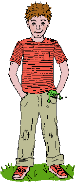
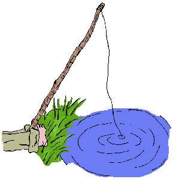

And McFeeglebee absolutely forbids fishing in that pond. He's put up five signs to prove it. "Before I'll allow any little boys to fish in there," he says, "I'd rather remove it."
"Little boys make too much noise. They'd scare the fish, being shouters and laughers and slappers. They'd muddy the water, and leave gum wrappers. No -- I'd be a fool to let them fish in my pool."
So for a long time nobody dared to fish in that pool. That is, not until little Georgie P. Johnson decided to break the rule. "I'm gonna fish there," he said, "under the oak, where it's cool."
"I'm gonna lie down with my knees in the air and the pole through my toes and doze like a lazy catfish in summer. Nobody will catch me. I'm a fast runner.
Everyone warned him. "A pool is not the sea. You can't fish for free, it's stealing. Besides, there's all sorts of surprises in McFeeglebee's pond. Nobody knows just what is in there besides fish and old shoes and the things people lose. You'll catch something dangerous so you'd better beware. Fish in that pond? I wouldn't dare!"
But little Georgie P. Johnson just wiggled his nose and pretended not to hear, as if he had molasses stuck in his ear. Of fishing he was very fond, why should he fear McFeeglebee's pond?
So early one morning with his pole in his hand, he crept past the red barn on McFeeglebee's land out to the edge of the grove to the pond, where he baited his hook, sinking it deep. Then Georgie P. Johnson fell asleep.